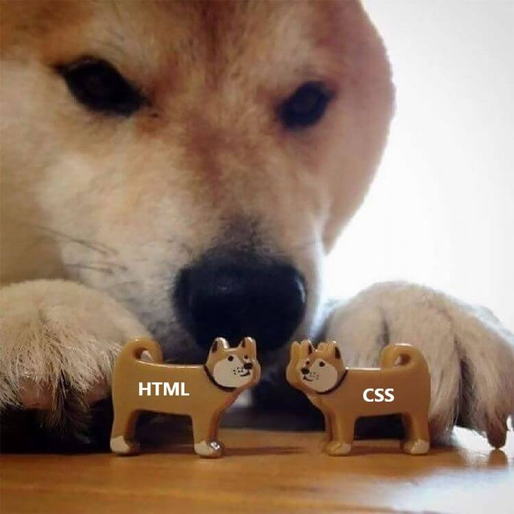

Находите самые свежие статьи на любую тему и сохраняйте в своём личном кабинете.

Об авторе
Это блок с описанием автора проекта. Здесь следует указать, как вас зовут, чем вы занимаетесь, какими технологиями разработки владеете.
Также можно рассказать о процессе обучения в Практикуме, чему вы тут научились, и чем можете помочь потенциальным заказчикам.